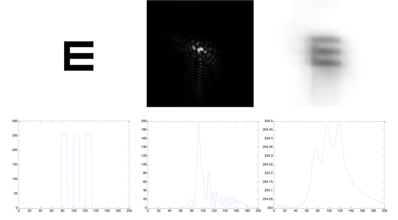
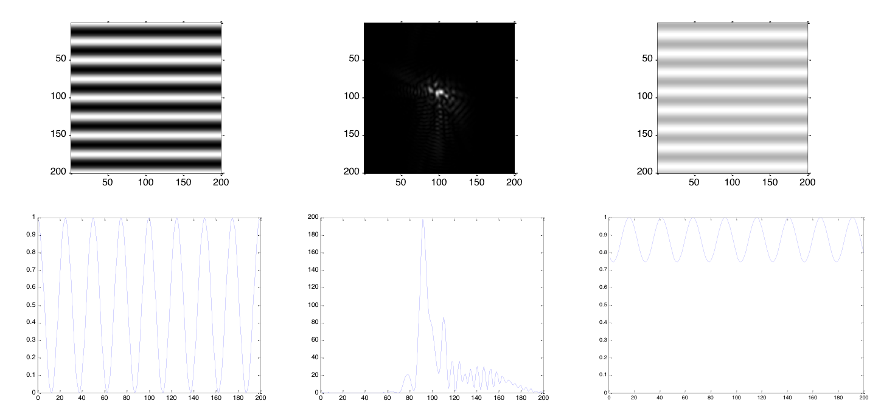
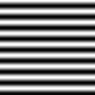

为什么对比敏感度的视标亮度是正弦变化的？(5)
前面说到测量对比敏感度所需要的视标，应该是经过任意像差的角膜、晶状体，在视网膜上成像以后，它的空间频率应当和经过一个理想无像差的眼睛一样。
如果空间频率不一样，就会有麻烦，比如医生想测量的是相对高频部分的30 cpd(cycle per degree,周/度，在一度范围内空间结构重复了多少次，这是空间频率的单位)，如果由于患者眼有像差的存在，也许在视网膜上的成像变成了20cpd，本来患者无法分辨的视标，反而因为像差因祸得福可以指出方向了。
类比测视力，就好像用1.0的视标去测病人，结果病人自带放大系统，视标放大到0.1的程度，这样的测量就错了。
由于病人的像差可以千奇百怪千差万别，所以病人的眼睛作为一个线性不变系统，也可能是千差万别的。要选择一个带有周期结构的输入，经过各种各不相同的线性系统还可以得到同周期的输出，满足这个能力的输入，就是所有线性不变系统的Eigenfunction了。
常规的E视标，相当于给入的输入的“方波”，那么如果经过一个有像差的眼睛，成像后的输出可能是这样的：

看输出的强度波形，会发现各个峰的高度是不同的，如果仔细测量，可能还会发现波峰之间的周期也会略有差别。甚至一个有经验的“视力测量欺骗者”，可以根据虚影的方向反推出视标的方向。
但如果是一个正弦波的视标。

经过同样有像差的眼，形成的仍然是正弦波，峰值是同样的，周期是同样的，区别只是“振幅”发生了变化。只有对比度这个变量会根据像差的情况改变，这样就方便了测量。
总结
为什么对比敏感度的视标亮度是正弦变化的？
答：因为人眼视觉成像过程近似于线性不变系统，亮度正弦变化的视标是线性系统的Eigenfunction，在经过人眼成像厚视标的空间频率不变。
至于为什么正弦函数是线性不变系统的Eigenfunction，就是另外一个很长的故事了。如果有兴趣可以参考吕乃光老师编写的《傅里叶光学(第二版)》，第50-52页。
One more thing
题图

很多人抱怨说看起来很不舒服。这是有道理的。因为人眼在对焦的时候可能是在不断测试是否看得“清晰”，至于“清晰”是可以有定义的。常见的方法是去比较图像中高频部分和低频部分的对比度。
通常低频部分的对比度随着离焦变化是比较慢的，就像你戴上从-3.00D到+3.00D的眼镜都可以分辨出0.1的视标。而高频部分只有在对焦清楚的时候对比度才最大——你只有找到合适的眼镜看1.0的视标才最清晰。
如果你眼前大范围的区域都是单一空间频率的正弦视标，就像题图中的那样，甚至如果整间屋子都是同一正弦函数。你的眼睛就失去了对焦的参照，因为只有一个空间频率了，所以会感觉不适。
Comments
Comments powered by Disqus